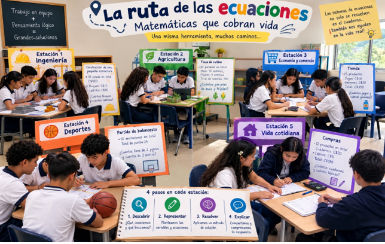

Texto
1Reconocer las variables
Reconocer las variables consiste en identificar cuáles son las cantidades que no conocemos en una situación problemática y que necesitamos encontrar. Para representarlas utilizamos letras, generalmente X y Y, indicando claramente qué representa cada una. Este paso es importante porque permite organizar la información del problema y saber exactamente qué cantidades estamos buscando.
8.4.2 Plantear las ecuaciones
Plantear las ecuaciones significa transformar la información que aparece en el problema, expresada normalmente con palabras, en lenguaje matemático. Para ello, se identifican los datos, las relaciones entre las cantidades conocidas y desconocidas y las condiciones que presenta la situación. De esta manera, se construyen las ecuaciones que forman el sistema y que permitirán encontrar los valores desconocidos.
8.4.3 Resolver el sistema
Resolver el sistema de ecuaciones consiste en encontrar los valores de las variables que hacen que todas las ecuaciones se cumplan al mismo tiempo. Para lograrlo, se puede utilizar alguno de los métodos estudiados, como sustitución, igualación o reducción. En este proceso se realizan operaciones algebraicas de manera ordenada hasta obtener el valor de las incógnitas.
8.4.4 Sustituir
Sustituir consiste en utilizar el valor que ya se encontró para una de las variables y colocarlo en una de las ecuaciones originales con el propósito de encontrar el valor de la otra variable. Este paso permite completar la solución del sistema y conocer todas las cantidades desconocidas que plantea la situación.
8.4.5 Verificar
Verificar significa comprobar que los valores obtenidos realmente cumplen con las condiciones planteadas en el problema. Para hacerlo, se sustituyen los resultados en las ecuaciones originales y se comprueba que las igualdades sean correctas. Este paso es fundamental porque permite confirmar que la solución encontrada es correcta y que tiene sentido dentro de la situación planteada.
Estación 1: Ingeniería
Los estudiantes asumirán el papel de jóvenes ingenieros.
Se les presentará una situación relacionada con materiales de construcción.
Ejemplo:
Para construir una pequeña estructura se compraron 30 piezas entre bloques y ladrillos, pagando un total de C$420. Si cada bloque cuesta C$15 y cada ladrillo C$10:
· ¿Cuántos bloques se compraron?
· ¿Cuántos ladrillos se compraron?
· ¿Qué variables utilizarían?
· ¿Qué sistema de ecuaciones permite resolver la situación?
1.Reconocer las variables:
X= Numero de bloques.
Y=Numero de Ladrillos.
2.Plantear las ecuaciones.
E1 X+Y=30
E2 15X+10Y=420
3.Resolver el sistema
Y=30-x
15x+10(30-x) = 420
15x+300-10x=420
5x+300=420
5x=120
X=120/5
X=24
4.Sustituir en x en ecuación 1.
X+Y=30
24+y=30
Y=30-24
Y=6
5.verificar
Cantidad de piezas
24+6=30
24(15) +6(10) =360+60=420
R: Total de bloques 24, ladrillos 6.
Estación 2: Agricultura
Los estudiantes se convertirán en planificadores de una pequeña finca.
Ejemplo:
Una finca tiene destinadas 20 parcelas para sembrar maíz y frijoles. Cada parcela de maíz requiere determinada cantidad de semillas y cada parcela de frijol otra cantidad. Conociendo la cantidad total de parcelas y de semillas utilizadas, los estudiantes deberán descubrir:
¿Cuántas parcelas corresponden a cada cultivo?
¿Cuáles serían las incógnitas?
¿Cómo representarían la situación mediante un sistema de ecuaciones?
Estación 3: Economía y comercio
Los estudiantes serán administradores de una pequeña tienda.
Ejemplo:
En una tienda se vendieron 25 productos entre jugos y gaseosas, obteniendo un ingreso total de C$350.
Si cada jugo cuesta C$10 y cada gaseosa C$20:
¿Cuántos jugos se vendieron?
¿Cuántas gaseosas se vendieron?
¿Cómo representar la situación mediante un sistema de ecuaciones?
Estación 4: Deportes
Los estudiantes resolverán una situación relacionada con un equipo deportivo.
Ejemplo:
En un partido de baloncesto, un jugador realizó 10 anotaciones entre tiros de 2 y 3 puntos, obteniendo un total de 24 puntos.
¿Cuántos tiros de 2 puntos realizó?
¿Cuántos tiros de 3 puntos realizó?
¿Qué sistema de ecuaciones permite encontrar la respuesta?
Estación 5: Vida cotidiana
Los estudiantes resolverán una situación cercana a sus experiencias.
Ejemplo:
Una familia compró 12 productos entre cuadernos y lápices y pagó C$180. Si cada cuaderno cuesta C$20 y cada lápiz C$5:
¿Cuántos cuadernos compraron?
¿Cuántos lápices compraron?
¿Qué variables utilizarían?
¿Qué método utilizarían para resolver el sistema?
Ejemplo

Tecnología Educativa
“Primero pensamos, luego resolvemos y finalmente comprobamos con la tecnología.”
Para finalizar la clase, los estudiantes trabajarán en equipos y utilizarán la herramienta tecnológica GeoGebra para comprobar las soluciones obtenidas en las diferentes estaciones de trabajo. Primero analizarán cada situación, identificarán las cantidades desconocidas, definirán las variables y plantearán el sistema de ecuaciones. Posteriormente resolverán el sistema utilizando los métodos estudiados en clase.
Una vez obtenida la solución, ingresarán las ecuaciones en GeoGebra y observarán gráficamente las rectas y su punto de intersección. Los estudiantes compararán la solución obtenida mediante el procedimiento algebraico con la representación gráfica, interpretando qué significa dicho punto dentro de la situación planteada.
De esta manera, la tecnología se utilizará como una herramienta de exploración, comprobación y aprendizaje, permitiendo que los estudiantes relacionen el lenguaje algebraico con la representación gráfica y comprendan que los sistemas de ecuaciones pueden utilizarse para resolver situaciones presentes en diferentes ámbitos de la vida cotidiana.